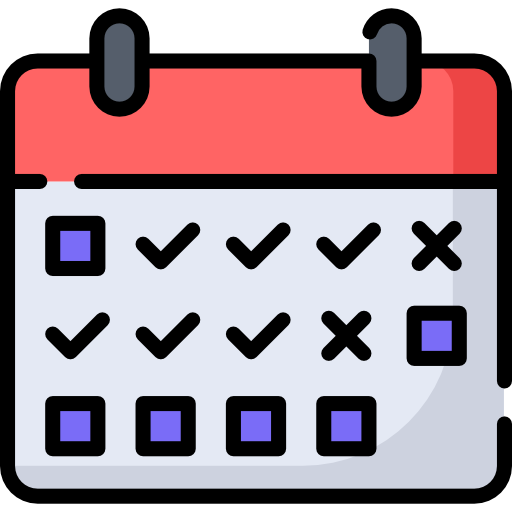
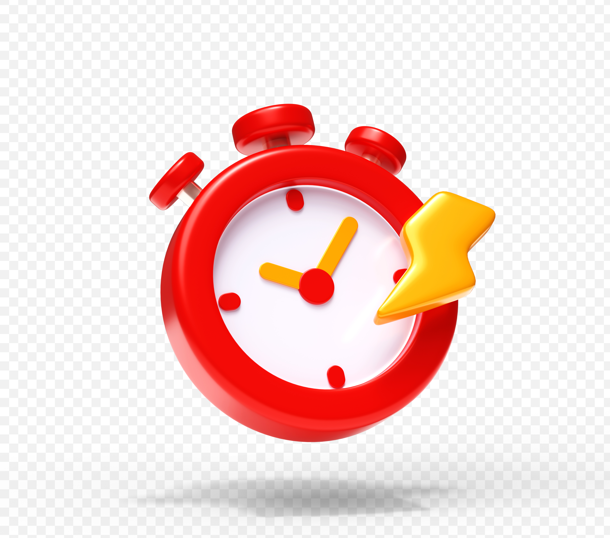
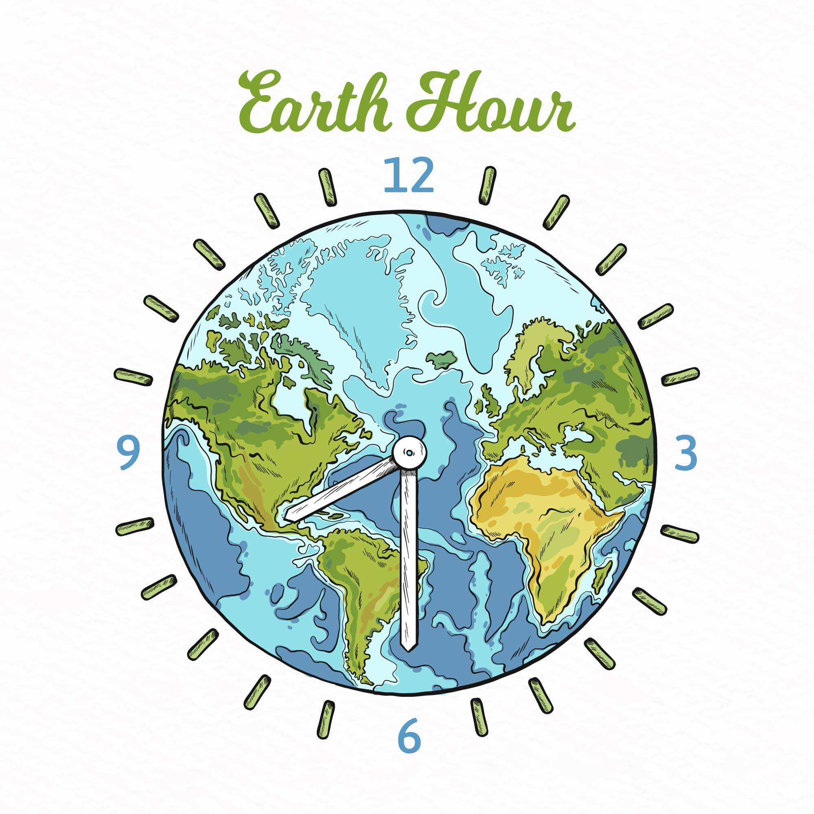

STARTED LEARNING PROGRAMMING IN COLLEGE.
I began with Java and Python in my first year of college.
STARTED LEARNING PROGRAMMING IN COLLEGE.
BUILT AN FIRST MINIPROJECT IN HTML.

--I created a simple responsive webpage using HTML and CSS.LEARNED JAVA,DATA STRUCTURES AND OOPS CONCEPTS.

--Focused on building strong programming fundamentals.INTERNSHIP IN FRONTEND,BUILT AN PORTFOLIO

--Learned to build websites using frontend.FINAL YEAR PROJECT ON AI/ML COMPLETED.
APPLIED FOR WEBINAR IN DATAART